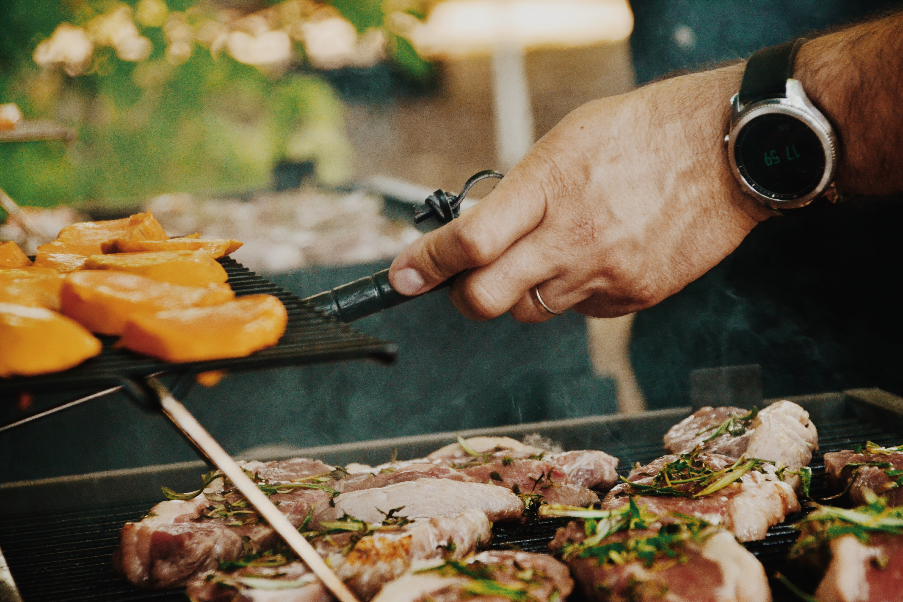

- HOME >
- こだわり
味田の三つのこだわり
味にこだわって厳選した黒毛和牛
長年焼肉業界に身を置く店主が選び抜いた黒毛和牛のみを使用しています。
肉選びからカット、味付けまでどの工程にも妥協を許しません。
こだわりの逸品をぜひご堪能下さいませ。

世代を超えて受け継がれる「秘伝のたれ」
当店では先代からの教えを受け継ぎ、こだわりをもってたれを手作りしています。
味噌をベースにまろやかでコクがあり、お肉との相性の良さだけをこだわった一品。
そんな「秘伝のたれ」ぜひご賞味ください。

「昭和レトロ」な雰囲気の店内
昭和の時代にタイムスリップしたかのような
懐かしい雰囲気の店内です。
お客様から「家じゃないのにほっと落ち着きます。」
というお言葉をかけていただきます。
ゆったりとした空間で美味しい焼肉をお召し上がりください。
店主からごあいさつ

当店ホームページにアクセスいただき、誠にありがとうございます。
わたしの父の代から受け継がれるこのお店は開店して35年という月日が流れました。
先代の頃からのお客様のお子様がお店を利用されるようになり、
月日の流れの速さを感じます。
お客様からお声いただきこのホームページを開設いたしました。
より良いサービスを求めるべく、止まることなく進化していきます。
こだわり抜いたお肉を仕入れ、カットから下味作業まで
妥協を許さず業務を行っております。
ぜひ「焼肉味田」にお越しくださいませ。
和田 一